0-1. 模组工具升级日志
2022/11/30 对项目结构进行了巨大变动，需要根据此文档，对工程进行升级 New Project Migration 新工程迁移
老工程如果要升级 Mod 相关工具，则需要覆盖如下目录
- ** MiddleLibLayer**
否则可能会出现意想不到的报错，导致无法正常编译打包。如果无法打包，则点击 Console，将报错堆栈信息发送给开发者。 若存在报错，可考虑整个工程进行覆盖。
You can download files from GitHub if you are not in China. Releases · Doreamonsky/Panzer-War-Lit-Mod alternatively you can download files from npm within package manager 4. 模组工具 NPM 版
更新日志
2023.7.23
- 修复斜穿公式计算错误
20230723231451-UnityProject.zip
2023.7.18
- 增加固定穿深的弹头材质，ExplosionWarheadMaterial
- 细化不同弹种的弹头信息
20230719002036-UnityProject.zip
2023.7.8
- 弹头材质增加斜穿参数 - Penetration Vs Angle Coff
- 模块与多炮塔的绑定改为配件 GUID，在 VehicleTextData 上，会根据多炮塔数据自动生成一系列 GUID，在模块上填写对应的 GUID，则内部模块的 debuff 会与对应炮塔进行自动关联
- VehicleInfo 中的多年代改成了数组，只要点击一下 VehicleInfo 数据，对应老数据会迁移到新的数组下 20230709145941-UnityProject.zip
2023.6.24
20230624201402-UnityProject.zip
- 增加飞机 Fmod 工程
2023.4.19 (1.0.10)
20230419234758-UnityProject.zip
- 修复炮塔带缩放情况下， FFPoint 等节点出现位置偏差
- 修复 Lua 断点无法识别文件名， 需要把已导入 Unity 的 lua 脚本选中，然后右键 Reimport 一下
2023.4.17 (1.0.8)
20230417220449-UnityProject.zip
- 修复了 Lua Property 字段部分情况下解析异常
- 修复了 Common 类型 Lua 脚本 OnStarted 未调用
- 增加了一个 Common 类型 Lua 脚本 FollowCameraTutorial ，轮播局内载具，再战斗中按 F1 生效
2023.4.16 (1.0.7)
20230416161844-UnityProject.zip
- 修复了编辑器布局错误
- 增加了校验工具，检查是否项目存在损坏资源 ![7_F((_9~SUK)OOTVW@Y(%]S.png](./images/20231024_1405198626.png) 目前支持：载具的 LOD 是否丢失，VehicleHitBox 是否丢失
- 修复 Vehicle Data Editor 重开编辑器后的一些问题
2023.4.15 (1.0.5)
20230415211612-UnityProject.zip
- 修复了位于 Turret 下的副炮打包时候报错，此 bug 只存在周二以后的编辑器工具中
2023.4.14 (1.0.4)
20230414000710-UnityProject.zip
- 增加飞机瞄准到目标才允许开火选项
2023.4.12
20230411235459-UnityProject.zip
- 新增 fmod 音效调试工具
- 飞机炮塔增加是否默认套父物体纠正轴向
2023.4.9
20230409225807-UnityProject.zip
- 试车场增加对 FPS 武器的支持
- 试车场增加障碍物
- 增加 Lua Profiler，用于自己写的 lua 脚本的性能监控。 需要注意耗时在 0.1ms 以上的脚本是否每帧在调用
2023.4.6
20230406221703-UnityProject.zip
- 付费mod 打包时候强制检查是否填写了模组包 id
- 修复炮弹页面文字乱码
- 修复生成 ui 的 lua 绑定代码错误
2023.4.5
20230405231555-UnityProject.zip
- 同步更新 API
2023.3.27
20230327002117-UnityProject.zip
- 修复部分lua 面板没显示 同步 Property 的按钮
- 瞄具图片与文本支持挂 lua 脚本
2023.3.26
20230326025041-UnityProject.zip
- 编辑器内试车场增加一键更新数据按钮 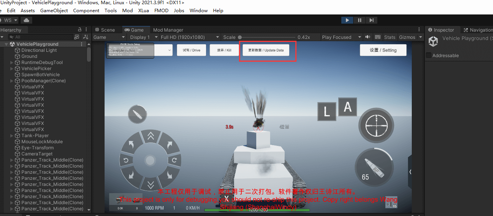
- Project Setting 窗口增加是否启用优先读取编辑器的本地资源选项 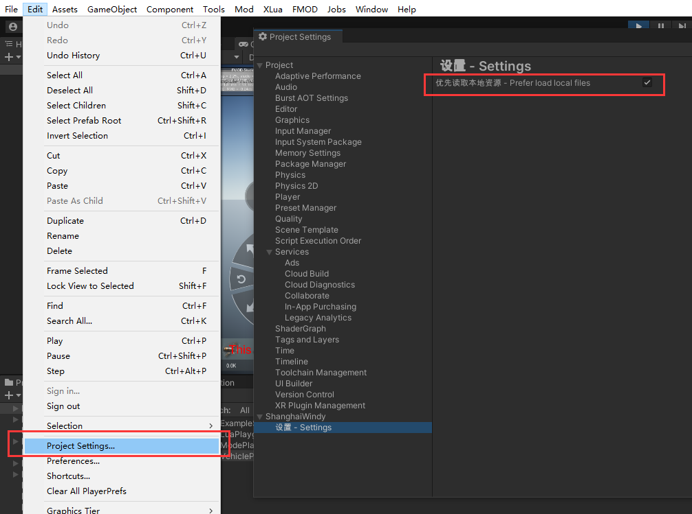
- DIY 增加 Lua Behavior 配置 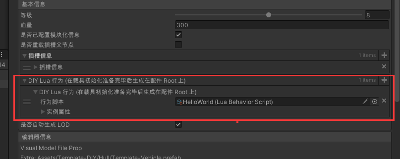
- DIY 数据，Text Data 数据，现在都支持从编辑器直接读取，无需重新打包，即可让新数据生效
- PropValue类 支持从 Lua 监听事件
self.OnTotalDamageChanged = function(oldVal, newVal)
print(tostring(oldVal) .. " -> " .. tostring(newVal))
end
self.vehicle.basePlayerState.totalDamage:OnValueChanged("+", self.OnTotalDamageChanged)
- 增加 LuaCommonInstanceData 类，用于做通用脚本 （如多炮塔的 gui 那种）
2023.3.23
20230323014132-UnityProject.zip
- Lua 编写的载具脚本，可以在不重新打包载具的情况下，优先读取编辑器内已修改的版本
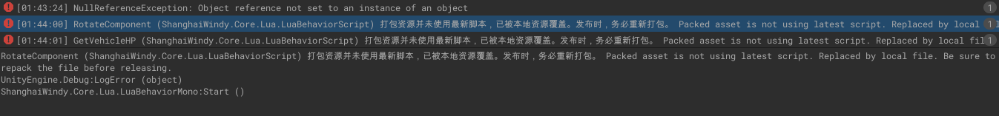
- 可在载具配置数据上直接挂 Lua 脚本，方便统一管理
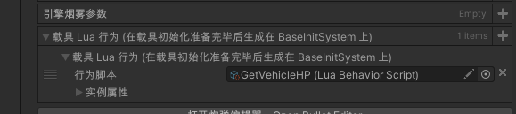
- 载具 Pack 时候，强制检查是否有命名为 MainBody 物体，避免运行时报错
- API 文档增加了 PlayerState 相关的说明文档
2023.3.21
20230321001015-UnityProject.zip
- 增加 Lua 模式的调试场景** ModePlayground.unity**
路径：Packages/com.shanghaiwindy.middlelayer/Tools/RuntimeDebugger/ModePlayground.unity 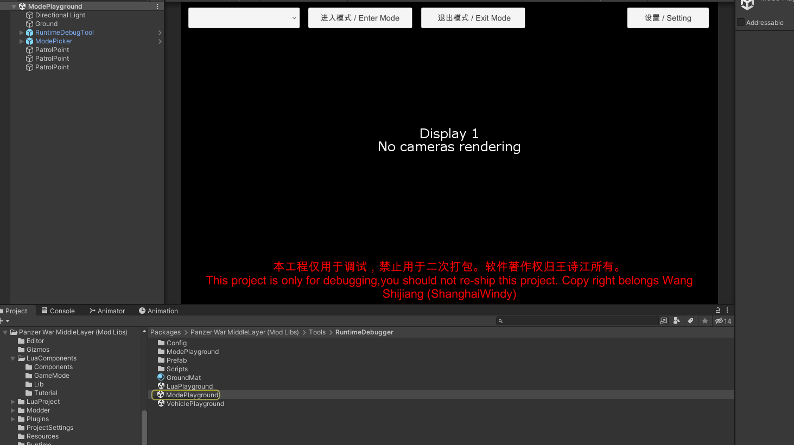
- 编辑器内的载具调试工具改名为 VehiclePlayground.unity
路径： Packages/com.shanghaiwindy.middlelayer/Tools/RuntimeDebugger/VehiclePlayground.unity
- 新增 TeamAPI 方便获取敌我队伍
2023.3.20
20230320000548-UnityProject.zip
- Lua 侧大改动，全新教程文档
2023.3.15
20230315010900-UnityProject.zip
- FmodPlayComponent 组件公开，使用文档见：
- 增加接口，参考文档。xlua 需要加上 CS.类名 才能正常访问此方法。 如 CS.ShanghaiWindy.Core.API.VehicleAPI
2023.3.14
20230314012421-UnityProject.zip
- DIY Holder 增加更新 Extra Info 的按钮
- Lua 脚本示例放在 MiddleLibLayer\LuaComponents 文件夹下，默认的 Template-Vehicle 已使用此示例脚本
- 复制载具数据增加面板自定义复制后的载具 Asset Name
- 模组包页面提示不要使用默认的名称
2023.3.13
20230313001750-UnityProject.zip {kind=link}
- 增加对 Lua 组件的支持 （XLuaComponent），在 UnityProject 的中，给 Template Vehicle 增加了一个示例的旋转代码
- Vehicle Data 界面可点击查看生成的预制体
2023.3.6
20230306221606-UnityProject.zip
- 修复部分情况下，会出现多个 HitBox 编辑窗口
- 付费模组的 uuid 增加长度校验，防止输错 uuid，导致付费模组无法加载
- 优化部分界面的显示
2023.3.5
20230305000035-UnityProject.zip
- 修复部分飞机在打包后游戏不加载，需要重打 BuildPipline
- 修复编辑模块装甲的界面的厚度显示与实际不一致
2023.3.2
20230302223337-UnityProject.zip
- 修复的 LOD 生成的缓存文件未清除过期 Mesh
- 修复了部分情况点击载具的 Pack，跳转到 LOD 的数据
2023.3.1
20230228232907-UnityProject.zip
- 修复飞机编辑器的炮塔路径错误
- 修复弹药编辑器一些中文显示错误
- HitBox 增加抗破的厚度设置 （游戏内暂时还未生效，等后续版本支持）
2023.2.23
20230223225321-UnityProject.zip
- 修复弹药架按名字倒序排序
- 拆解 DIY 时，自动创建共享数据，用于同步两侧数据
2023.2.22
20230222232718-UnityProject.zip
弹药架按名字排序
生成 lod 时候，根据原始物体的layer赋值
2023.2.21
20230221235022-UnityProject.zip
- 修复了弹药架排序错误的报错
2023.2.18
20230218230027-UnityProject.zip
- 改进 Vehicle Data 与 Vehicle HitBox 的编辑模式，防止部分情况下 Inspector 失去聚焦的情况下，无法编辑。
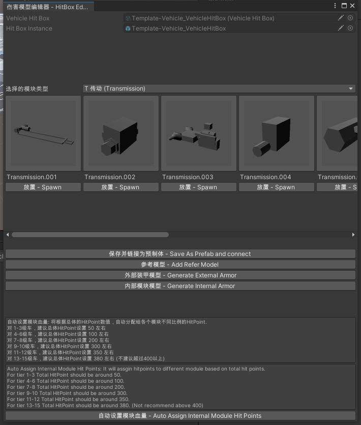
2023.2.15
20230215000439-UnityProject.zip
- 修复去除模组加密勾选项，仍生成带加密信息的模组包
- 飞机增加一些空引用的判断
- 修复 DIY 地图导入，地形材质丢失
- 优化与汉化部分报错信息的显示
2023.2.12
20230212192604-UnityProject.zip
- 增加 PrefabPackerGroup，可以批量对 坦克，飞机 ，DIY 生成的预制体进行重新生成
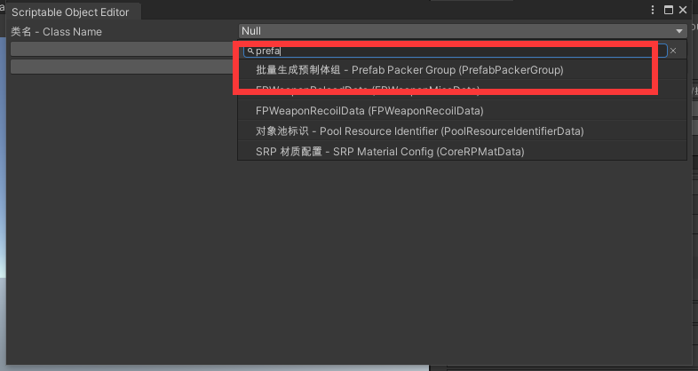 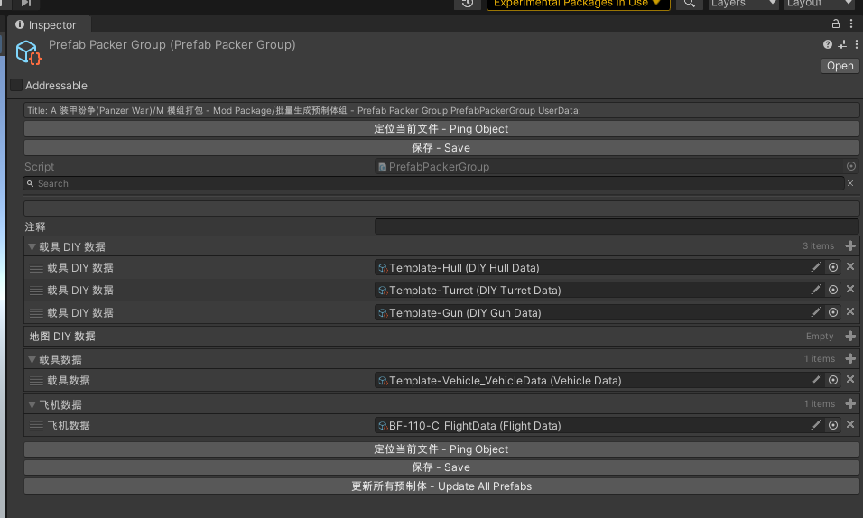
- 在打包流程增加选项，可在打包时候自动重新 Pack 坦克，飞机 ，DIY
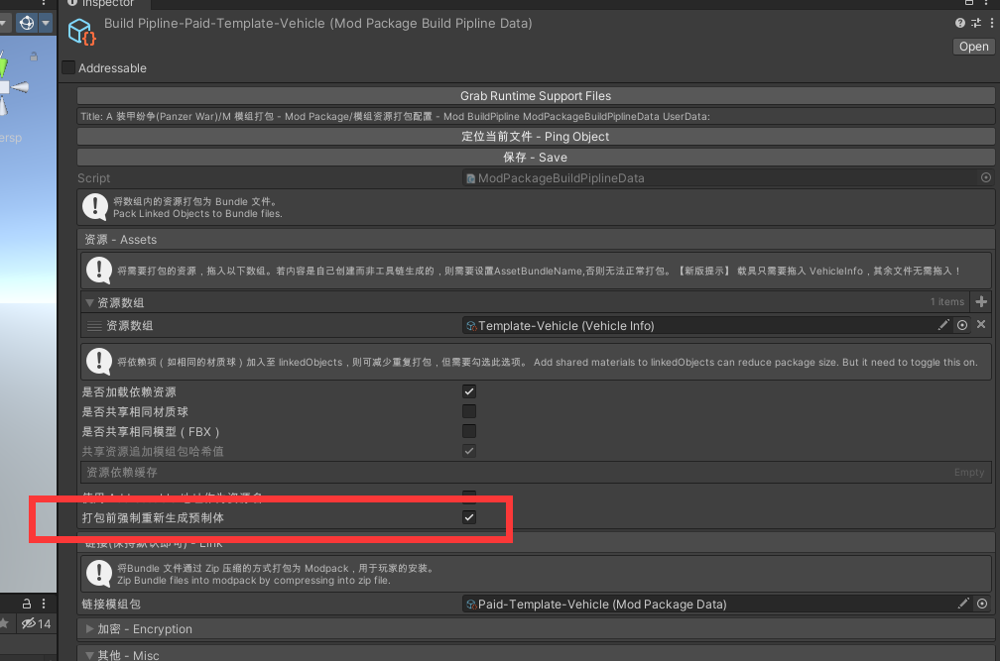
- 增加 lua 的 mono 组件，可以挂载 lua 方法到 gameobject 上进行运行
2023.2.6
20230206225023-UnityProject.zip
- 增加对 il runtime 的 dll 的打包支持
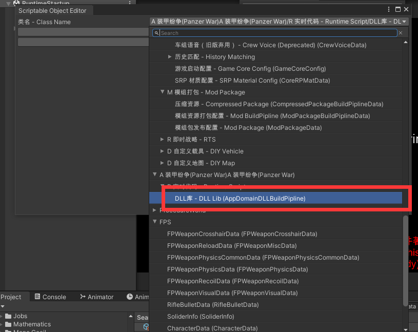
- 增加编辑器工具的语言切换，可以仅显示中文，使界面更加清晰
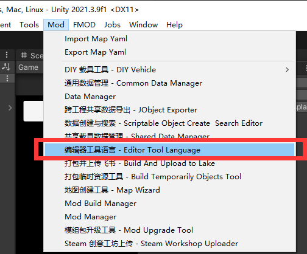 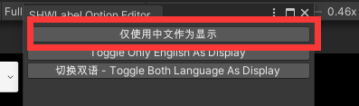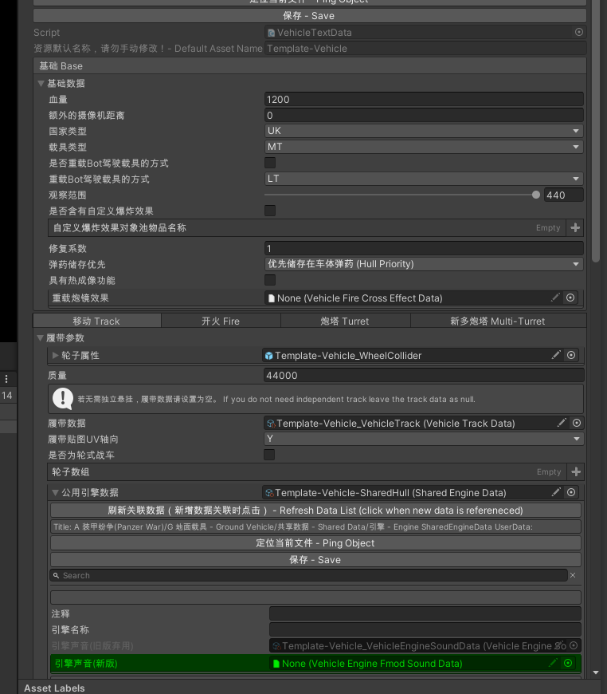
2023.2.2
20230202003547-UnityProject.zip
- Asset Prop 增加清空引用的选项
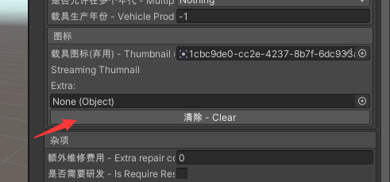
- 飞机编辑器在 Pack 时，会提示哪个物体的引用错误
- 飞机编辑器增加提示
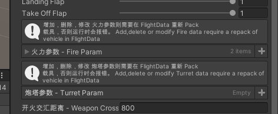
2023.1.28
常用资源转到共享目录，迁移文档见： 3. Shared Resources 共享资源文件夹
修复使用依赖打包的模组，在实时调试工具内无法正常加载依赖
20230128161856-UnityProject.zip
2023.1.26
- 载具缩略图改为 Streaming
- 载具调试工具增加设置界面，资源升到最新
- 坦克，飞机，DIY Pack 时候，会强制 HitBox 与 模块模型的 R/W 勾上 （未勾上，会导致非等比缩放时，游戏内报 Collision Mesh Data 的错误）
- DIY 坦克增加 Engine Smoke 数组
20230126143440-UnityProject.zip
2023.1.15
- 修复了 pack 载具后，再编辑载具会导致 lod 丢失。 同时，编辑载具的速度得到了优化！
- 优化了载具的打包速度，以及减小了载具的打包包体大小 20230115203407-UnityProject.zip
2023.1.11
- 准镜增加图片自定义，准镜增加文字覆盖，文字颜色
- DIY 生成 Prefab 的检查删去对旧音效的判空逻辑
20230110234950-UnityProject.zip
2022.1.2
20230102214045-UnityProject.zip
- 修复一些 Bug
2022.12.18
20221218230119-UnityProject.zip
- 修复无法对坦克资源进行 Pack Assets
- 针对轮式载具轮子自动创建 Wrapper，防止因为建模软件的错误轴向导致旋转错误
- 增加资产导出 Unity Package 的快捷方式，方便反馈问题给开发者。详情见：
27. Send Mod to Devs for Debugging 发送至模组开发者查问题
2022.12.17
20221217013655-UnityProject.zip
- 增加发布渠道 modpack，mod.io 与 steam 创意工坊
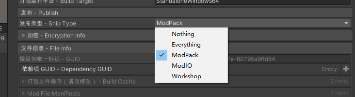
- 增加创意工坊上传工具包 （工程需要手动添加 package，与 middle layer 添加方式一致）
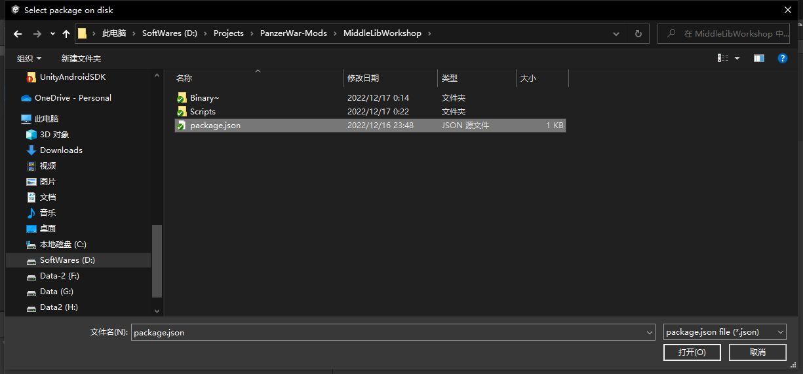 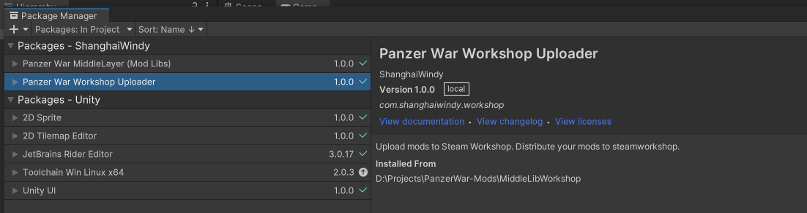 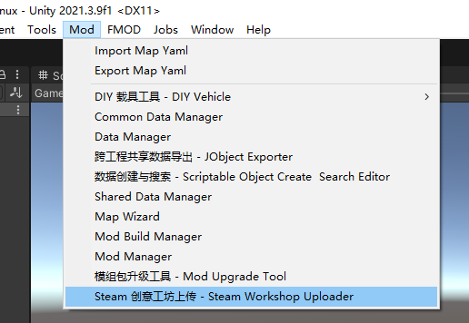
- 优化打包勾选依赖情况下的资源依赖
2022.12.14
20221214002534-UnityProject.zip
- 增加 dds 转 png 自动化流程
2022.12.1
20221201002002-UnityProject.zip
- DIY 资源引用改为 GUID 引用，且兼容旧版本
{kind=link}
2022.11.30
20221130003750-UnityProject.zip
- Fmod 结构修改
- 工程结构巨大变动，升级指南见：New Project Migration 新工程迁移
2022.11.27
20221127212849-UnityProject.zip
- 增加 Fmod 的 Mod 功能支持
2022.11.22
20221123001637-UnityProject.zip
- 配置数据快速创建与搜索功能
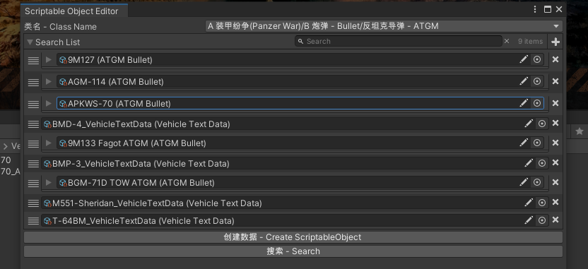
- 预制自定义贴图，将贴图文件解压到指定目录
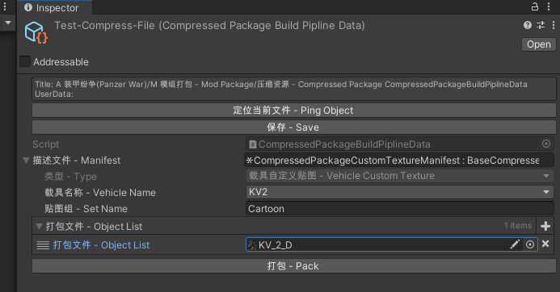
- 预设的 Fmod 音频事件，目前内置了一些坦克的音效。可直接配置在坦克上。
位于：Assets/Res/Vehicles/Data/FMod 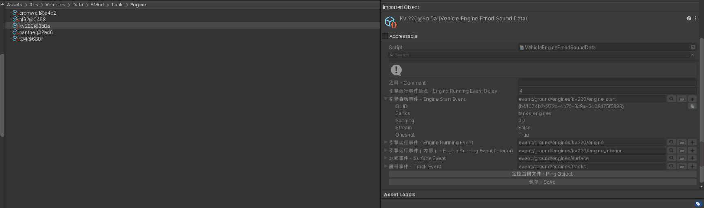
- VehicleTextData 增加额外额外的引擎烟雾的配置点
- 增加自爆功能，可在 VehicleTextData 配置，或者新增自爆组件
2022.11.6
20221106235336-UnityProject.zip
- 针对开启加载依赖资源的 BuildPipline，增加了依赖的可视化日志。可通过 log 的搜索，检查资源的冗余。
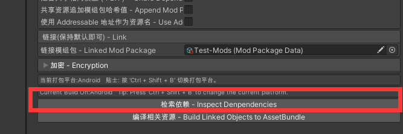 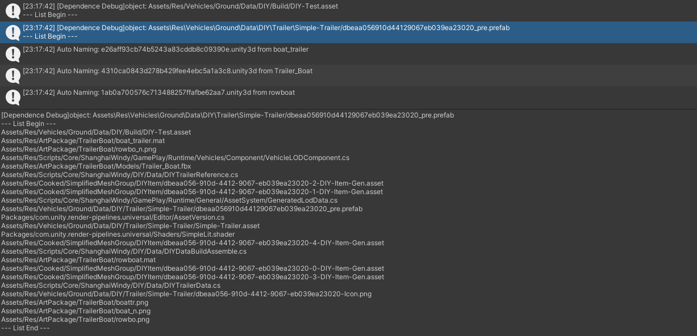
2022.11.1
20221101000414-UnityProject.zip
- 支持发射组
- 支持随主炮，副炮按钮一起开火
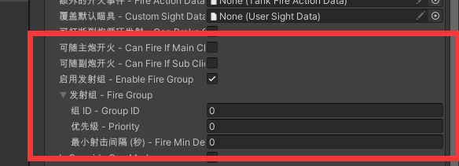
- 简单多炮塔的开火配置增加 Dym
2022.10.30
20221030183719-UnityProject.zip
- DIY 载具相关组件生成预制体时，将对应生成自动的 LOD。对于已创建的预制体，需要点击重新生成预制体，才可以使 LOD 生效
- 增加 DIY 载具文件选取的工具，用于批量选择 DIY 载具
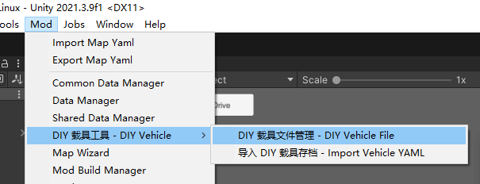 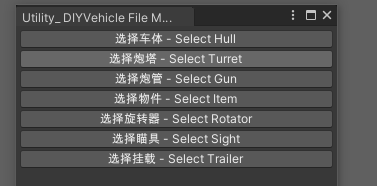
- 选中多个同类型的 DIY 载具配置时，会显示批量操作
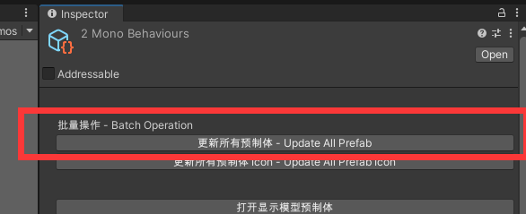
- 正式加入 DIY 的拖挂
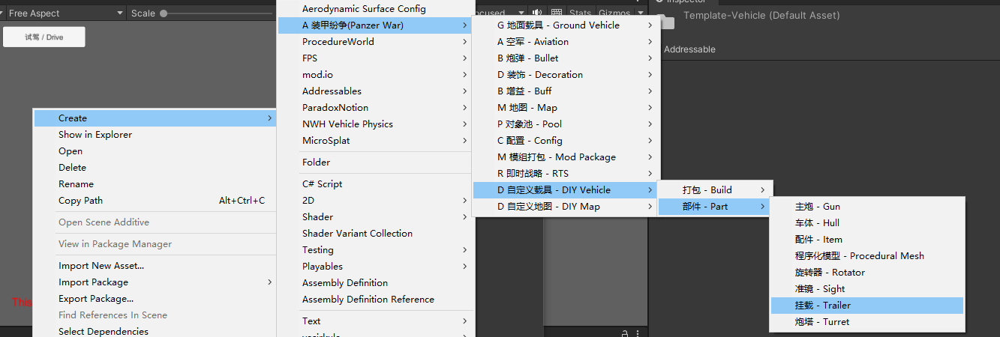
2022.10.25
20221025233509-UnityProject.zip
- 增加 DIY 存档导入为 DIY 载具配置的功能，方便 Mod 开发者在提供配件 Mod 的同时，提供一个预设载具。
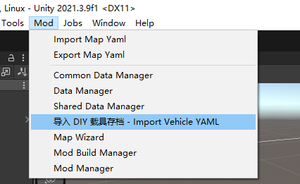
- 增加拖挂的预览 DIY 组件
- 增加 SRP 材质兼容组件，用于做特效中的模型材质
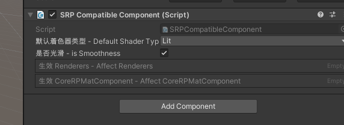
2022.10.22
20221022014918-UnityProject.zip
- 修复创建新载具时候，部分情况下载具的名称未写入本地
2022.10.20
20221020154821-UnityProject.zip
- 修复部分窗口无法展开
2022.10.19
20221019224859-UnityProject.zip
- 修复载具无法导出贴图
2022.10.18
20221018223117-UnityProject.zip
- 增加 FireBall 与 Laser 弹种
- 菜单下拉框本地化处理
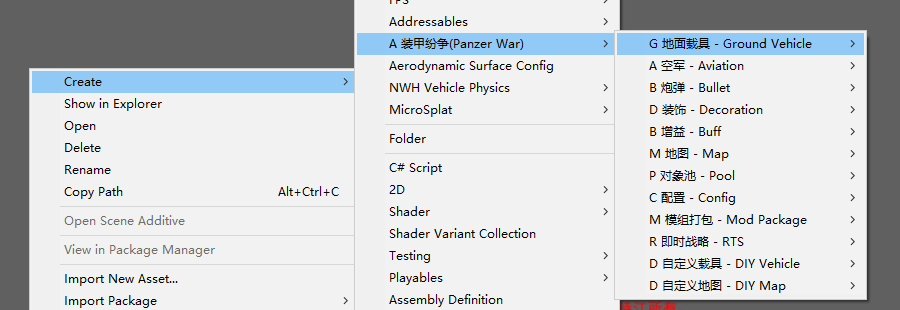
- 特效下拉框本地化处理
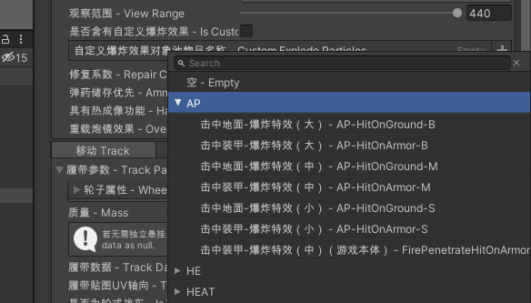
- 项目升级到 Unity 2021.3.9f1 ，若要在编辑器运行载具，则必须升级到此版本，否则无法加载。
2022.9.14
- 修复编辑器 Bug
20220914210611-UnityProject.zip
2022.9.8
- 增加 VT 弹 与弹链
20220908142630-UnityProject.zip
2022.8.29
- 编辑器增加实时调试功能
25. 编辑器实时调试功能 20220829012311-UnityProject.zip
2022.8.21
- 增加 Mech 的旋转参数 @宝马鸽
- 增加工具修复 Render 层级错误： https://www.yuque.com/chaojiduolajiang/panzerwar/hh40zx @制杖拉菲
- 履带编辑器增加节点统一 X 轴功能.
20220821114316-UnityProject.zip
2022.7.12
- 修复部分情况下弹药架排序导致无法 Pack 载具
附件下载： 20220712232816-UnityProject.zip
2022.5.8
- 修复 DIY 载具打包，上传失败
- 增加 ModPackage 构建脚本支持 详情查看文档： https://www.yuque.com/chaojiduolajiang/panzerwar/dkespl
- 修复依赖资源只对 DIY 内容生效
2022.4.30
- 增加模组包的 Hash 添加到依赖资源，防止加密模组包之间的资源依赖冲突
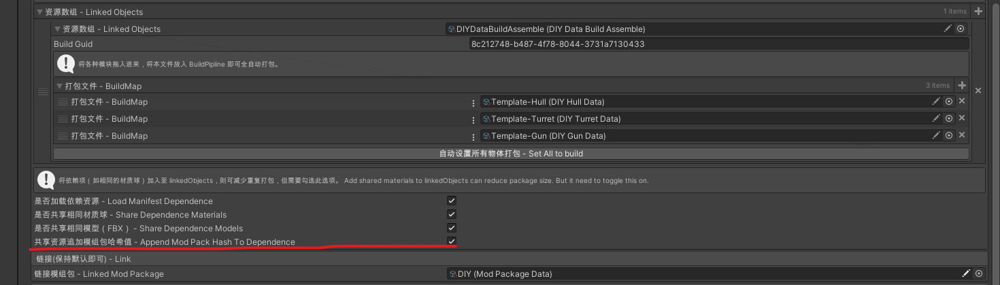
- 修复 飞机，武器的 Vehicle Info 无法打包出来